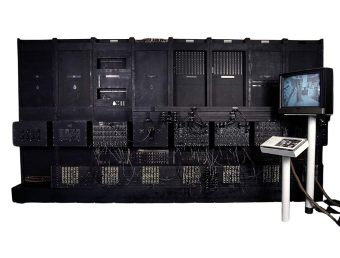

<html>
<head>
	<meta charset="utf-8">
	<title> ENIAC </title>
</head>
</html>

<body style="padding:0; margin:0; background-color:#FFFFFF; display:flex; align-items:center ; justify-content:center;">
	<div style="background-color:#4682B4; width: 300px; height: 160%;float: left; width: 1000px;">
			<center>
					<hr style= "width:200px; height:5px; background-color: #00008B; border: none;">
					<font color="#FFFFFF" face="Perpetua","Open Sans" size="20px">
						<b> E N I A C </b>
					</font>
					<hr style= "width:200px; height:5px; background-color: #00008B; border: none;">
			</center>
		<p>
		<center>
			<table>
				<tr>
					<td>
						
					</td>
				</tr>
				<tr>
					<td>
						<font face="Courier New" color="#FFFFFF" size="5px">
							<center><b>(1945)</b></center>
							<p>
						</font>	
					</td>
				</tr>
			</table>
			<br><br><br>
			<table>
				<tr>
					<td>
						<font color="#FFFFFF" face="Perpetua","Open Sans" size="5px">	
								<ul>
									<li> O ENIAC (Electronic Numerical Integrator and Computer) foi o primeiro <br>
										computador eletrônico de uso geral, capaz de realizar uma variedade de <br>
										cálculos complexos. </li>
									<p>
									<li> Foi Desenvolvido a pedido do exército dos Estados Unidos para seu <br>
										laboratório de pesquisa balística, o ENIAC era um monstrengo de 30 <br>
										toneladas de peso que ocupava uma área de 180 m² de área construída </li>
									<p>
									<li> Sua produção custou nada menos do que US$ 500 mil na época, <br>
										aproximadamente US$ 6 milhões atualmente </li>
									<p>
									<li>Apesar de ter uma capacidade de operação menor do que qualquer <br>
										calculadora de mão moderna, durante seus 10 anos de operação o <br>
										ENIAC “realizou mais contas do que toda humanidade já havia feito em <br>
										sua história” </li>
									<p>
									<li>
										A fim de que os painéis do Eniac funcionassem com a velocidade <br>
										necessária, era preciso realizar um processo repetitivo que consistia em: <br>
										Enviar e receber números entre si; <br>
										Fazer os cálculos necessários; <br>
										Salvar o resultado dos cálculos; <br>
										Desencadear a próxima operação. <br>
									</li>
									<p>
									<li>
										Entrada e saída de informações do computador aconteciam por meio de <br>
										um sistema de leitura de cartões.
									</li>
								</ul>
						<font>
					</td>
				</tr>
			</table>
		</center>
		<br>
		<center>
			<table>
					<tr>
						<td>
							<a href="Página 9.html">
								<button style="width: 100px; height: 50px; color: #FFFFFF; background-color: #00008B; border-radius: 16px; ;">
									<
								</button>
							</a>
						</td>
						<td>
							<a href="index.html">
								<button style="width: 100px; height: 50px; color: #FFFFFF; background-color: #00008B; border-radius: 16px; ;">
									INÍCIO
								</button>
							</a>
						<td>
							<a href="Página 11.html">
								<button style="width: 100px; height: 50px; color: #FFFFFF; background-color: #00008B; border-radius: 16px;">
									>
								</button>
							</a>
						</td>
					</tr>
			</table>
		</center>	
	</div>
</body>